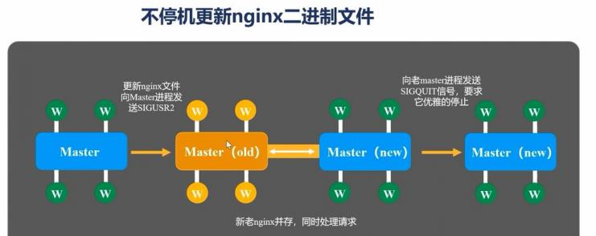
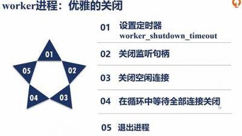

Nginx总结 #

Nginx架构 #
- 共享内存 Slab 分页 4K， 8K， 16K
Nginx反向代理 #
类型 #
- 带权重的round-robin算法是基础
- hash负载均衡算法
ip-hash算法 -> real-ip
hash算法 -> 自定义可以hash的参数（比如?userName）
问题: 如果有upstream的机器宕机， hash算法还会路由到这台机器 解决方案：使用一致性hash(consistent),hash 环
- least-connection算法， 如果所有节点的connection都一致， 会退化成为round-robin算法。
可扩展立方体 #
- X-axis 基于round-robin或者least-connected算法分发请求 -> 相对简单
- Y-axis 基于URL对功能进行分发。 -> 相对复杂
- Z-axis 将用户IP地址或者其他信息映射到某个特定的服务或者集群 -> 相对简单
多种协议反向代理 #
- tcp udp 透传
- http -> memcached , scgi, fastcgi, uwsgi, grpc, http, websocket
反向代理流程 #
修改发送到upstream机器的请求的nginx指令。
节点热更新 #
master节点热更新 #

worker节点热更新 #

域名转发到其他域名[2] #
- return 指令
- rewrite
- proxy_pass
文件下载 #
nginx.conf
location /userlab.dat {
charset gbk;
# alias /home/hp/home/frontend/indicator/userlab.dat;
root /home/cms/indicator;
if ($request_filename ~* ^.*?\.(txt)$){
add_header Content-Disposition 'attachment';
add_header Content-Type: 'APPLICATION/OCTET-STREAM';}
autoindex on;
autoindex_exact_size off;
autoindex_localtime on;
}